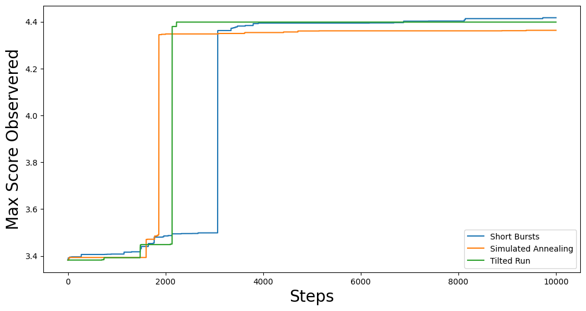

Optimization Methods of GerryChain¶
In GerryChain, we provide a class known as the SingleMetricOptimizer as well as a
Gingelator subclass that allow us to perform optimization runs.
Currently, there are 3 different optimization methods available in GerryChain:
Short Bursts: This method chains together a series of neutral explorers. The main idea is to run the chain for a short period of time (short burst) and then continue the chain from the partition that maximizes the objective function within the most recent short burst. For more information, please refer to this paper.
Simulated Annealing: This method varies the probablity of accepting a worse plan according to a temperature schedule which ranges from 0 to 1.
Tilted Runs: This method accepts a worse plan with a fixed probability \(p\), and always accepts better plans.
While sampling naively with GerryChain can give us an understanding of the neutral baseline for a state, there are often cases where we want to find plans with properties that are rare to encounter in a neutral run. Many states have laws/guidelines that state that plans should be as compact as feasibly possible, maximize preservation of political boundaries and/or communities of interest; some even look to minimize double bunking of incumbents or seek proportionality/competitiveness in contests. Heuristic optimization methods can be used to find example plans with these properties and to explore the trade-offs between them.
The first thing we should do is set up our import statements
from gerrychain import (GeographicPartition, Partition, Graph, MarkovChain,
proposals, updaters, constraints, accept, Election)
from gerrychain.optimization import SingleMetricOptimizer, Gingleator
from gerrychain.tree import recursive_seed_part
from functools import partial
import pandas as pd
import json
from networkx.readwrite import json_graph
import matplotlib.pyplot as plt
from tqdm import tqdm
import numpy as np
import random
random.seed(2024)
And now we load in our file and set up our initial chain.
graph = Graph.from_json("BG_05.json")
POPCOL = "TOTPOP"
SEN_DISTS = 35
EPS = 0.02
TOTPOP = sum(graph.nodes()[n][POPCOL] for n in graph.nodes())
chain_updaters = {
"population": updaters.Tally(POPCOL, alias="population"),
"VAP": updaters.Tally("VAP"),
"BVAP": updaters.Tally("BVAP")
}
initial_partition = Partition.from_random_assignment(
graph=graph,
n_parts=SEN_DISTS,
epsilon=EPS,
pop_col=POPCOL,
updaters=chain_updaters
)
proposal = partial(
proposals.recom,
pop_col=POPCOL,
pop_target=TOTPOP/SEN_DISTS,
epsilon=EPS,
node_repeats=1
)
constraints = constraints.within_percent_of_ideal_population(initial_partition, EPS)
Using SingleMetricOptimizer¶
Now the SingleMetricOptimizer is set up as a wrapper around our basic MarkovChain
class, so interacting with it should be familiar. To set up our optimizer, we simply
pass it a proposal function, some constraints, an initial state, and the objective function:
num_cut_edges = lambda p: len(p["cut_edges"])
optimizer = SingleMetricOptimizer(
proposal=proposal,
constraints=constraints,
initial_state=initial_partition,
optimization_metric=num_cut_edges,
maximize=False
)
And now we can run each of the optimization methods and collect some data!
total_steps = 10000
# Short Bursts
min_scores_sb = np.zeros(total_steps)
for i, part in enumerate(optimizer.short_bursts(5, 2000, with_progress_bar=True)):
min_scores_sb[i] = optimizer.best_score
# Simulated Annealing
min_scores_anneal = np.zeros(total_steps)
for i, part in enumerate(
optimizer.simulated_annealing(
total_steps,
optimizer.jumpcycle_beta_function(200, 800),
beta_magnitude=1,
with_progress_bar=True
)
):
min_scores_anneal[i] = optimizer.best_score
# Tilted Runs
min_scores_tilt = np.zeros(total_steps)
for i, part in enumerate(optimizer.tilted_run(total_steps, p=0.125, with_progress_bar=True)):
min_scores_tilt[i] = optimizer.best_score
We can then plot the results to see how each method performed:
fig, ax = plt.subplots(figsize=(12,6))
plt.plot(min_scores_sb, label="Short Bursts")
plt.plot(min_scores_anneal, label="Simulated Annealing")
plt.plot(min_scores_tilt, label="Tilted Run")
plt.xlabel("Steps", fontsize=20)
plt.ylabel("Min #CutEdges Observered", fontsize=20)
plt.legend()
plt.show()
This should give you something like:

Using Gingleator¶
Named for the Supreme Court case Thornburg v. Gingles, Gingles’ Districts are districts that are 50% + 1 of a minority population subgroup (more colloquially called majority-minority districts). It is common to seek plans with greater/maximal numbers of Gingles’ districts to understand the landscape of the state space.
The Gingleator class is a subclass of the SingleMetricOptimizer class, so much of
the setup is the same:
gingles = Gingleator(
proposal,
constraints,
initial_partition,
minority_pop_col="BVAP",
total_pop_col="VAP",
score_function=Gingleator.reward_partial_dist
)
Likewise, the methods are similar as well:
total_steps = 10000
# Short Bursts
max_scores_sb = np.zeros(total_steps)
scores_sb = np.zeros(total_steps)
for i, part in enumerate(gingles.short_bursts(10, 1000, with_progress_bar=True)):
max_scores_sb[i] = gingles.best_score
scores_sb[i] = gingles.score(part)
# Simulated Annealing
max_scores_anneal = np.zeros(total_steps)
scores_anneal = np.zeros(total_steps)
for i, part in enumerate(
gingles.simulated_annealing(
total_steps,
gingles.jumpcycle_beta_function(1000, 4000),
beta_magnitude=500,
with_progress_bar=True
)
):
max_scores_anneal[i] = gingles.best_score
scores_anneal[i] = gingles.score(part)
# Tilted Runs
max_scores_tilt = np.zeros(total_steps)
scores_tilt = np.zeros(total_steps)
for i, part in enumerate(gingles.tilted_run(total_steps, 0.125, with_progress_bar=True)):
max_scores_tilt[i] = gingles.best_score
scores_tilt[i] = gingles.score(part)
And we can plot the results again:
fig, ax = plt.subplots(figsize=(12,6))
plt.plot(max_scores_sb, label="Short Bursts")
plt.plot(max_scores_anneal, label="Simulated Annealing")
plt.plot(max_scores_tilt, label="Tilted Run")
plt.xlabel("Steps", fontsize=20)
plt.ylabel("Max Score Observered", fontsize=20)
plt.legend()
plt.show()
This should give you something like:
And we can see a little better how each method performs over the course of the run:

From this we can observe that, throughout the entire run, the score function can dip all the way back down to 0 even relatively shortly after being at the maximum of 4.5.